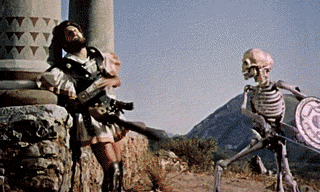
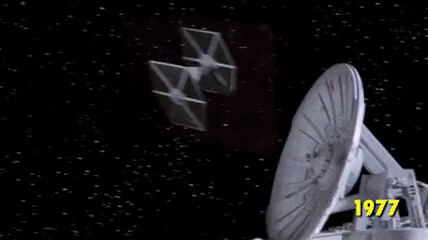
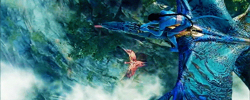

-
The Execution of Mary, Queen of Scots
Alfred Clark, Thomas Edison — 1895O primeiro efeito especial que se tem registro aconteceu no filme The Execution of Mary, Queen of Scots (1893), com a cena da decapitação da rainha, no momento em que a cabeça seria cortada, simplesmente pararam a filmagem, congelaram os atores e substituíram a atriz por um boneco. Foi o nascimento do truque e da manipulação da verdade para o convencimento de audiências. O filme foi produzido por Thomas Edison.

-
Viagem à Lua (Le Voyage Dans La Lune)
George Méliès — 1902George Méliès, mostrou ao mundo como o cinema pode ser utilizado para criar coisas inimagináveis. Seu filme Le Voyage Dans La Lune (1902), é considerado o primeiro filme de ficção científica. Técnicas variadas foram criadas por Méliès e perduraram durante anos na criação de filmes. Perspectiva forçada, miniaturas, exposição múltipla, pinturas de fundo (matte paint), stop motion e o primeiro animatronic que se tem notícia.

-
O Grande Roubo do Trem (The Great Train Robbery)
Edwin S. Porter — 1903Além de ser um dos primeiros exemplos de narrativa realista no cinema, o filme foi inovador em outros aspectos: é o primeiro a ter filmagem em ambientes externos, a ser filmado em vários locais, a utilizar bonecos como “duplos” dos atores e pioneiro na utilização de movimentos de câmera e no uso, ainda muito incipiente, da montagem paralela e uso do zoom, técnica avançada para a época, na famosa cena do tiro em direção à platéia. Foi o segundo filme western da história, estabeleceu alguns paradigmas do gênero, como os tiros que forçam uma pessoa a dançar, as perseguições a cavalo e o tiroteio final. Foi um dos primeiros filmes a usar dupla exposição e matte painting para compor cenas realistas, inserindo a paisagem na janela do trem em movimento.

-
Nosferatu
Friedrich Wilhelm Murnau — 1922Nosferatu (1922), é até hoje a mais sombria e mágica das muitas versões dessa lenda sobrenatural vampiresca. O diretor F. W. Murnau foi um dos grandes diretores alemães em Hollywood, igualando-se em pioneirismo apenas com Lubisch. Além da incrível maquiagem e dos efeitos mecânicos, Murnau acelerou a projeção em alguns trechos e usou filme negativo para criar uma carruagem fantasma, coisa altamente inovadora para a época.
-
O Mundo Perdido (The Lost World)
Harry Hoyt — 1925O produtor cinematográfico Watterson R. Rothacker contratou o técnico de efeitos especiais Willis O’Brien para dar vida aos animais pré-históricos em The Lost World. O’Brien pensou em filmar quadro-a-quadro as sequências, o que daria a sensação de movimento quando o filme fosse rodado em velocidade normal. Para tal, foi criado uma tela de acetato de celulose, inventada por Sidney Saunders, que fazia uma projeção de retaguarda substituindo a tela de vidro convencional, o que permitia a incorporação da filmagem quadro-a-quadro na película central. Outra novidade também foi inventada: o impressor óptico DeVernon Walker, que permitia a combinação de efeitos especiais com a ação ao vivo. Este conjunto de inovações técnicas viria a ser conhecido como stop-motion.
-
Metropolis
Fritz Lang — 1927Em seu filme marco de 1927, o diretor Fritz Lang criou o mundo distópico de Metropolis usando modelos em miniatura intrincada e detalhados. Paisagens urbanas em escala real foram usadas juntamente com técnicas de perspectiva para criar ambientes de outra maneira inexistentes.

-
King Kong
Merian C. Cooper, Ernest B. Schoedsack — 1933Process, criado pelo septuagenário C. Dodge Dunning em 1925, um croma-key primitivo que consistia na filmagem do fundo em azul e do objeto em amarelo, permitindo a criação de um recorte realista em filmes preto e branco através de filtros. Lindwood Dunn utilizou os recursos que tinha na época para criar um filme que espantou e encantou audiências no mundo todo. Um Gorila de 12 metros, que na verdade tinha 45 centímetros que ele conseguiu apavorar e apaixonar milhões de pessoas ao mesclar várias técnicas de efeitos como animação, maquetes e bonecos de uma maneira única.
-
O Homem Invisível (The Invisible Man)
James Whale — 1933Fazer um filme como The Invisible Man (1933) não foi uma tarefa nada fácil. Além das sobreposições de imagens, os truques para esconder os fios que seguravam as roupas de Claude Rains e a inteligente forma de criar o homem invisível a partir do uso de veludo preto no corpo do ator ou dos dublês, que se colocavam à frente de um veludo também preto, e em seguida filmada em dupla exposição num ambiente diferente.
-
The Wizard Of Oz
Victor Fleming — 1939Se você já viu um filme, você já deve ter visto um matte painting. Uma parte essencial de muitos filmes produzidos antes da era CGI, matte painting’s são projeções reais ou pinturas colocados atrás de objetos de primeiro plano, para enganar o público em acreditar que os atores estavam em um local diferente. O matte paint no vidro, também foi utilizado para criar mais espaço ou estruturas sem o custo da construção.
-
O ladrão de Bagdá (The Thief of Bagdad)
Michael Powell, Ludwig Berger, Tim Whelan — 1940Tudo o que vem à nossa mente ao mencionarmos a Arábia e As Mil e Uma Noites pode ser encontrado em The Thief of Bagdad(1940). Tapetes voadores, feiticeiros, sultões, dançarinas de véu, cavalos alados, gênios da lâmpada que concedem três pedidos. E mais algumas mágicas cinematográficas, como uma aranha gigante ou a transformação de um menino em cachorro. O famoso fundo azul, foi usado pela primeira vez aqui, em um filme colorido. Usando um processo da Technicolor de três tiras de filmes, filmava-se o objeto sobre um fundo azul, por ser a cor que mais se difere dos tons de pele e também pelo fato do azul gerar menos grão.
-
Jasão e os Argonautas (Jason and the Argonauts)
John Chaffey - 1967Uma das formas mais antigas de animação é o stop-motion, com registros de ter sido utilizada a partir de 1898. A técnica também foi importante para a versão de 1933 de King Kong, mas só entraria para a cartilha de efeitos especiais 34 anos depois, graças a Ray Harryhausen em Jasão e os Argonautas.
 -
Tubarão (Jaws)
Steven Spielberg - 1975O que é preciso para tornar um filme sobre tubarões um verdadeiro sucesso? Para Steven Spielberg, diretor de Tubarão, a resposta era óbvia: um tubarão perfeito. A tarefa de construir um tubarão animatrônico que funcionasse no mar era considerada impossível, até que Bob Mattey foi lá e fez. O robô era considerado uma maravilha da engenharia, de tão à frente de seu tempo que era.
-
Star Wars
George Lucas - 1977"Queria fazer um filme de ação, um lugar onde naves espaciais se destroçassem. Queria fazer cortes rápidos e dar muito ritmo, e, especialmente, queria que contivesse muita cinematografia. Mas nessa época era impossível", explica Lucas em um documentário. A necessidade o levou a fundar, em 1975, a empresa Industrial Light & Magic (ILM), que se especializou em modernizar e digitalizar as técnicas análogas e agora é um referencial. Um grupo de jovens engenheiros passou dias e noites durante quase dois anos em um local ao norte de Los Angeles, inovando os sistemas de animação, fotografia e gráficos, assim como as impressoras óticas, com as quais mesclavam várias filmagens.
 -
O Exterminador do Futuro 2 (Terminator 2)
James Cameron - 1991James Cameron com “O Exterminador do Futuro 2: O Julgamento Final” conseguiu criar um personagem inteiramente feito de metal líquido por CGI (Sigla em inglês para Imagens Geradas por Computador). Qualquer efeito que vemos hoje com líquidos. Seja uma cachoeira, seja um copo de refrigerante, deve às inovações de Cameron.
-
Jurassic Park
Steven Spielberg - 1993Em 1993, outro grande nome do cinema entrou para esta lista. Steven Spielberg com “Jurassic Park”. Se Cameron criara um personagem verossímel através de CGI, Spielberg criou um personagem real. Os efeitos visuais desse filme se sustentam até hoje. Misturando animatrônicos (sim, eles construíram um robô T-Rex em tamanho real) com computação gráfica, o diretor conseguiu extrair o melhor dos dois mundos. Uma curiosidade é que dos 127 minutos de filme, os dinossauros só aparecem em 15, mostrando como Spielberg soube esconder suas cartas, criar tensão e não desgastar os efeitos.
-
Toy Story
John Lasseter - 1995“Toy Story”, de 1995, foi o primeiro longa-metragem de animação por CGI de todos os tempos. Não à toa, o primeiro longa da Pixar, que é um estúdio conhecido por avanços técnicos na área de animação digital. Sim, “Toy Story” não é um filme live-action (com atores aparecendo frente à câmera). Mas sem dúvidas, sua existência possibilitou a vinda de muitos outros filmes dependentes de efeitos visuais.
-
Matrix
Lana Wachowski, Lilly Wachowski - 1999Em 1999, os irmãos Wachowski lançaram “Matrix”. Outro filme que inovou absolutamente no CGI. O bullet time (cenas de extrema câmara lenta), Neo parando as balas no ar, e mais outras incontáveis cenas de encher os olhos. Muitos filmes copiaram as técnicas desenvolvidas por “Matrix”. Nenhum teve tanto êxito (nem mesmo as sequências do longa). Mas o filme de 1999 será sempre lembrado, dentre vários aspectos, pelas incríveis cenas de ação.
-
Senhor dos Anéis (The Lord of the Rings)
Peter Jackson - 2001, 2002, 2003A trilogia baseada na obra de J.R.R. Tolkien tem, entre outros méritos, o fato de ter casado perfeitamente os efeitos especiais analógicos com os de computação gráfica. O neo-zelandês Peter Jackson foi capaz de inovar fortemente em dois aspectos. Primeiro, a equipe de efeitos visuais Weta (criada por Jackson) conseguiu criar exércitos gigantes com milhares de membros usando inteligência artificial para cada soldado virtual, já que seria impensável animar cada um individualmente. Houve ainda a criação de Gollum, o primeiro personagem completamente por CGI e captura de movimentos. É incrível o nível de realismo. Os realizadores misturavam os movimentos de Andy Serkis com animação 3D tradicional conferindo um sentido de realismo excepcional. É impressionante até hoje.
-
Avatar
James Cameron - 2009Por fim, em 2009, James Cameron revolucionou mais uma vez o cinema de efeitos visuais com “Avatar”. O filme conta com a mesma tecnologia de captura de movimentos de Jackson, porém aprimorada. Cameron foi capaz de criar um universo inteiro através de computação gráfica. Boa parte do longa é quase como “Toy Story”. Mas dessa vez, os personagens não são caricaturais. Eles são realistas.
